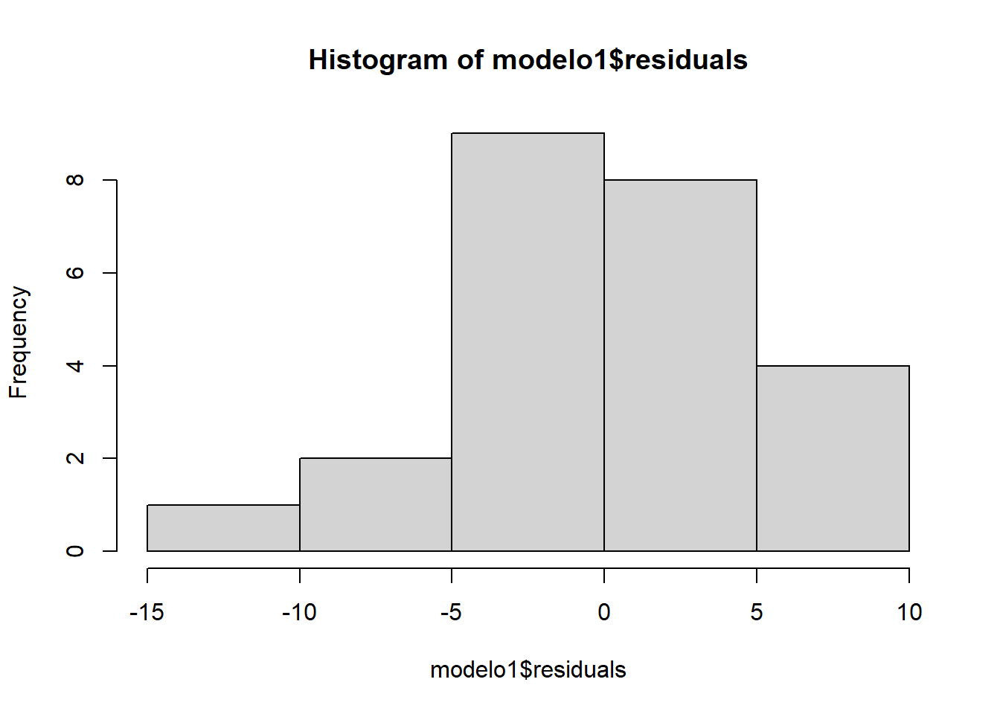
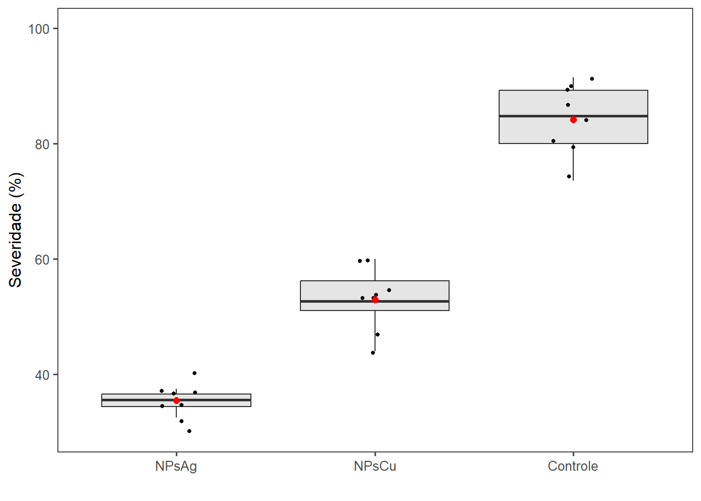
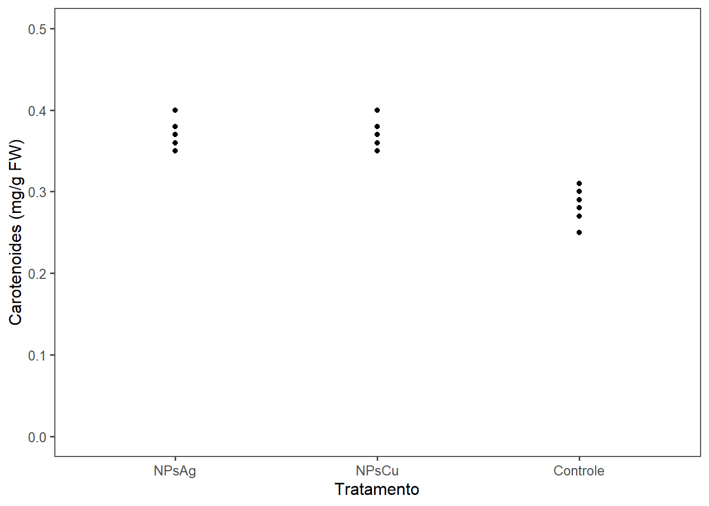
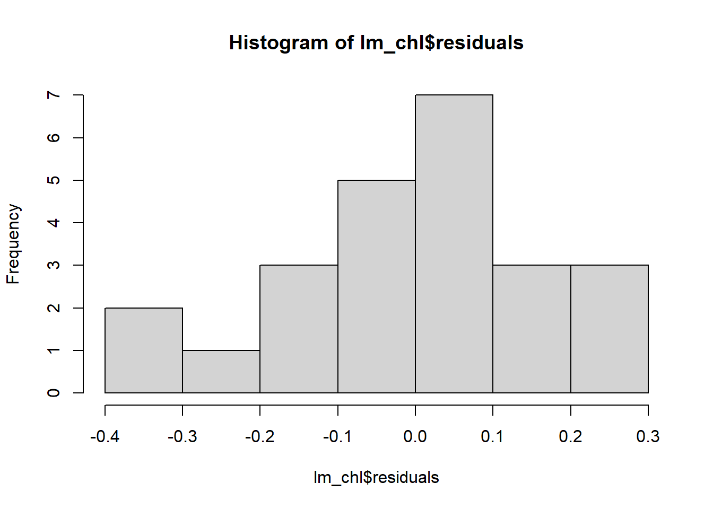

library(readxl)
library(DT)
library(tidyverse)
library(ggthemes)
library(dplyr)
library(DHARMa)
library(performance)
library(emmeans)
library(multcomp)
library(epifitter)
library(tidyverse)
library(agricolae)
library(patchwork)Teste in vivo
Pacotes
Severidade
Importando dados
sev <- read_xlsx("dados_in_vivo.xlsx", 3)
datatable(sev)Vizualização dos dados
sev2 <- sev|>
group_by(trat, tempo) |>
summarise(severidade_mean = mean(severidade))
sev2 |>
ggplot(aes(tempo, severidade_mean, color = factor(trat)))+
geom_point() +
geom_line(size = 0.8)+
scale_x_continuous(limits = c(48,192), breaks = seq(48,192,48))+
scale_y_continuous(limits = c(0,100), breaks = seq(0,100,10))+
theme_few()+
labs(x = "hai", y = "Severidade (%)", color = "")+
scale_color_few()ANOVA
sev$tempo <- as.factor(sev$tempo)
sev3 <- sev |> filter(tempo == "192")
modelo1 <- lm(severidade ~ trat, data = sev3)
anova(modelo1)Analysis of Variance Table
Response: severidade
Df Sum Sq Mean Sq F value Pr(>F)
trat 2 9762.8 4881.4 192.96 3.044e-14 ***
Residuals 21 531.2 25.3
---
Signif. codes: 0 '***' 0.001 '**' 0.01 '*' 0.05 '.' 0.1 ' ' 1Teste de normalidade e homogeneidade
plot(simulateResiduals(modelo1))check_normality(modelo1)OK: residuals appear as normally distributed (p = 0.406).check_heteroscedasticity(modelo1)OK: Error variance appears to be homoscedastic (p = 0.127).hist(modelo1$residuals)
Comparação das médias
emmeans <- emmeans(modelo1, ~trat)
cld(emmeans, Letters = letters) trat emmean SE df lower.CL upper.CL .group
NPsAg 35.5 1.78 21 31.8 39.1 a
NPsCu 53.0 1.78 21 49.3 56.7 b
Controle 84.2 1.78 21 80.5 87.9 c
Confidence level used: 0.95
P value adjustment: tukey method for comparing a family of 3 estimates
significance level used: alpha = 0.05
NOTE: If two or more means share the same grouping symbol,
then we cannot show them to be different.
But we also did not show them to be the same. sev3 |>
ggplot(aes(x = factor(trat, levels = c("NPsAg", "NPsCu", "Controle")),
y = severidade)) +
geom_boxplot(fill = "gray90",
outlier.color = NA) +
geom_jitter(width = 0.1,
height = 1,
color = "black",
size = 1.1) +
geom_point(stat = "summary",
fun = "mean",
shape = 20, size = 3.2 , color = "red") +
scale_y_continuous(limits = c(30, 100),
n.breaks = 5) +
theme_few()+
labs(x= "", y= "Severidade (%)")
AACPD
data_sev <- read_xlsx("dados_in_vivo.xlsx", 3)
data_sev$tempo <- as.numeric(as.character(data_sev$tempo))
a1 <- data_sev |>
group_by(trat, rep) |>
summarise(aacpd = AUDPC(tempo, severidade))
a1
m_a1 <- lm(aacpd ~ trat + factor(rep),
data = a1)
anova(m_a1)Teste de normalidade e homogeneidade
plot(simulateResiduals(m_a1))
check_normality(m_a1)OK: residuals appear as normally distributed (p = 0.543).check_heteroscedasticity(m_a1)OK: Error variance appears to be homoscedastic (p = 0.066).Comparação das médias
media <- emmeans(m_a1, ~trat)
cld(media, Letters = letters) trat emmean SE df lower.CL upper.CL .group
NPsAg 2820 117 14 2569 3070 a
NPsCu 3608 117 14 3358 3859 b
Controle 5378 117 14 5128 5629 c
Results are averaged over the levels of: rep
Confidence level used: 0.95
P value adjustment: tukey method for comparing a family of 3 estimates
significance level used: alpha = 0.05
NOTE: If two or more means share the same grouping symbol,
then we cannot show them to be different.
But we also did not show them to be the same. Pigmentos
Importando os dados
pig <- read_xlsx("dados_in_vivo.xlsx", 2)
datatable(pig)Visualização dos dados
chl1 <- pig |>
ggplot(aes(x = factor(trat, levels = c("NPsAg", "NPsCu", "Controle")), y = clorofila))+
geom_point()+
scale_y_continuous(limits = c(0,4), breaks = seq(0,4,1)) +
theme_few() +
labs(x = "Tratamento", y = "Chl a+b (mg/g FW)", color ="")
chl1 car1 <- pig |>
ggplot(aes(x = factor(trat, levels = c("NPsAg", "NPsCu", "Controle")), y = carotenoides))+
geom_point()+
scale_y_continuous(limits = c(0,0.5), breaks = seq(0,0.5,0.1)) +
theme_few() +
labs(x = "Tratamento", y = "Carotenoides (mg/g FW)", color ="")
car1 
(chl1|car1)
Clorofila
lm_chl <- lm(clorofila ~ trat, data = pig)
anova(lm_chl)Analysis of Variance Table
Response: clorofila
Df Sum Sq Mean Sq F value Pr(>F)
trat 2 6.5396 3.2698 117.71 3.884e-12 ***
Residuals 21 0.5833 0.0278
---
Signif. codes: 0 '***' 0.001 '**' 0.01 '*' 0.05 '.' 0.1 ' ' 1Teste normalidade e homogeneidade
plot(simulateResiduals(lm_chl))check_normality(lm_chl)OK: residuals appear as normally distributed (p = 0.120).check_heteroscedasticity(lm_chl)OK: Error variance appears to be homoscedastic (p = 0.996).hist(lm_chl$residuals)Comparação das médias
media_chl <- emmeans(lm_chl, ~trat)
cld(media_chl, Letters = letters) trat emmean SE df lower.CL upper.CL .group
Controle 1.79 0.0589 21 1.67 1.91 a
NPsCu 2.09 0.0589 21 1.97 2.22 b
NPsAg 3.02 0.0589 21 2.89 3.14 c
Confidence level used: 0.95
P value adjustment: tukey method for comparing a family of 3 estimates
significance level used: alpha = 0.05
NOTE: If two or more means share the same grouping symbol,
then we cannot show them to be different.
But we also did not show them to be the same. chl2 <- pig |>
group_by(trat) |>
summarise(clorofila_mean = mean(clorofila),
clorofila_sd = sd(clorofila)) |>
ggplot(aes(x = factor(trat, levels = c("NPsAg", "NPsCu", "Controle")), y = clorofila_mean)) +
geom_point()+
scale_y_continuous(limits = c(0,4), breaks = seq(0,4,1)) +
geom_errorbar(aes(ymin = clorofila_mean - clorofila_sd,
ymax = clorofila_mean + clorofila_sd,
width = 0.05))+
theme_few() +
labs(x = "Tratamento", y = "Chl a+b (mg/g FW)", color ="") +
annotate("text", x= 1, y= 3.4, label = "a") +
annotate("text", x= 2, y= 2.5, label = "b") +
annotate("text", x= 3, y= 2.1, label = "c")
chl2
Carotenoides
lm_car <- lm(carotenoides ~ trat, data = pig)
anova(lm_car)Analysis of Variance Table
Response: carotenoides
Df Sum Sq Mean Sq F value Pr(>F)
trat 2 0.042233 0.0211167 50.68 9.185e-09 ***
Residuals 21 0.008750 0.0004167
---
Signif. codes: 0 '***' 0.001 '**' 0.01 '*' 0.05 '.' 0.1 ' ' 1Testando normalidade e homogeneidade
plot(simulateResiduals(lm_car))check_normality(lm_car)OK: residuals appear as normally distributed (p = 0.209).check_heteroscedasticity(lm_car)OK: Error variance appears to be homoscedastic (p = 0.798).hist(lm_car$residuals)Comparando as médias
media_car <- emmeans(lm_car, ~trat)
cld(media_car, Letters = letters) trat emmean SE df lower.CL upper.CL .group
Controle 0.285 0.00722 21 0.270 0.300 a
NPsCu 0.370 0.00722 21 0.355 0.385 b
NPsAg 0.378 0.00722 21 0.362 0.393 b
Confidence level used: 0.95
P value adjustment: tukey method for comparing a family of 3 estimates
significance level used: alpha = 0.05
NOTE: If two or more means share the same grouping symbol,
then we cannot show them to be different.
But we also did not show them to be the same. car2 <- pig |>
group_by(trat) |>
summarise(carotenoides_mean = mean(carotenoides),
carotenoides_sd = sd(carotenoides)) |>
ggplot(aes(x = factor(trat, levels = c("NPsAg", "NPsCu", "Controle")), y = carotenoides_mean)) +
geom_point()+
scale_y_continuous(limits = c(0,0.5), breaks = seq(0,0.5,0.1)) +
geom_errorbar(aes(ymin = carotenoides_mean - carotenoides_sd,
ymax = carotenoides_mean + carotenoides_sd,
width = 0.05))+
theme_few() +
labs(x = "Tratamento", y = "Chl a+b (mg/g FW)", color ="") +
annotate("text", x= 1, y= 0.42, label = "a") +
annotate("text", x= 2, y= 0.41, label = "a") +
annotate("text", x= 3, y= 0.33, label = "b")
car2